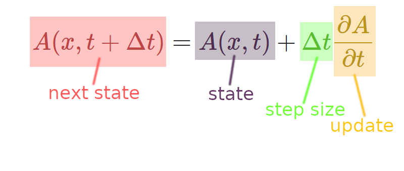

previous slide
--
Table of Contents
--
next slide
Strange Mathematics and Foreign Poetry

This thought exercise was inspired by
"Inverse problems"
presented by Scott Carney at the 2014 Biophotonics Summer School at University of Illinois at Urbana-Champaign.